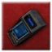
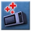
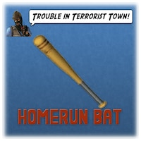
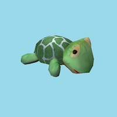
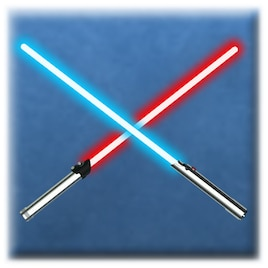
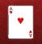
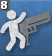

Top Tier Items in Utility
Traitor

Radar: All the Traitor professionals use this S-tier item. It pings the location of every person still alive in the map about every 10 seconds.

Medkit: Just killed some Innocents in a messy manner? Down to 20 hp? It's time to heal up.

Home Run Bat: Works best on outdoor maps with no walls. Send your foes flying to the abyss.

Turtlenade: Got no clue how to sneakily kill the Innocents? Now it's time to

Lightsaber: All the Traitor professionals use this S-tier item. It pings the location of every person still alive in the map about every 10 seconds.
Detective
Radar: Every Detective needs this. It pings the location of every person still alive in the map about every 10 seconds.
Health Station: Has double the storage as the medkit, but is stationary.
Home Run Bat: Yes, Detective gets this item as well. Batter up!

Second Chance: In a pinch and not sure what to buy? Buy second chance and you'll have a possibility of returning back to life!

Dance Gun: This is the only overpowered item I'm going to tell you guys about. The rest you'll have to find yourself.